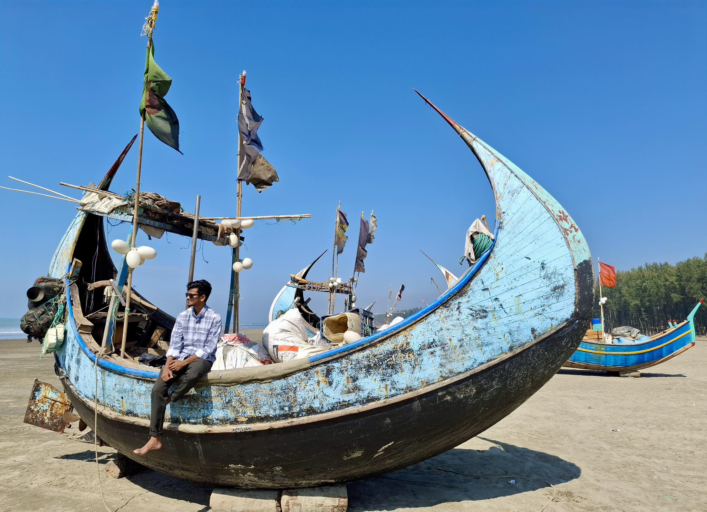
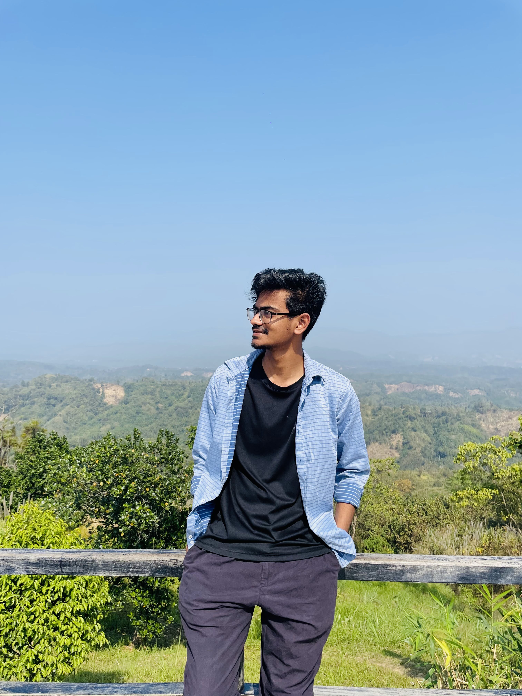
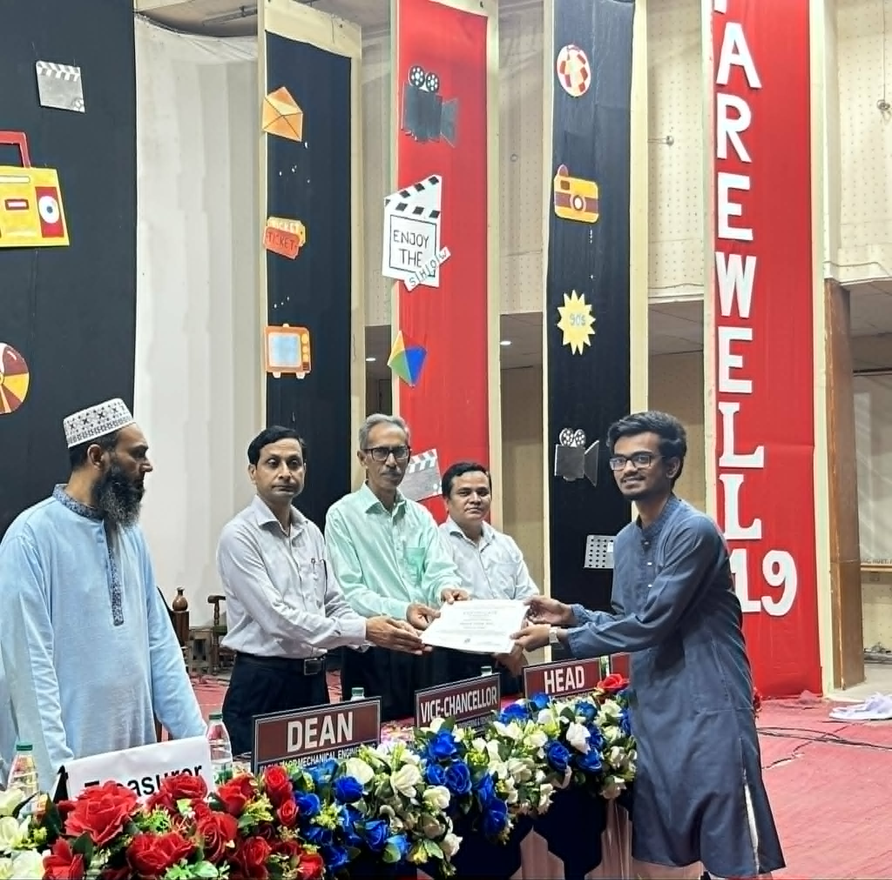
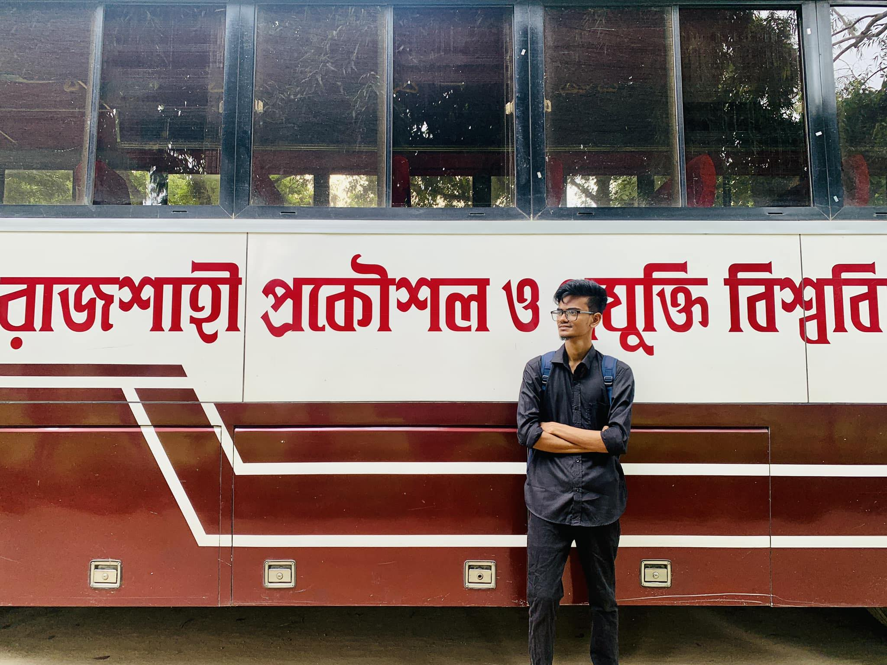
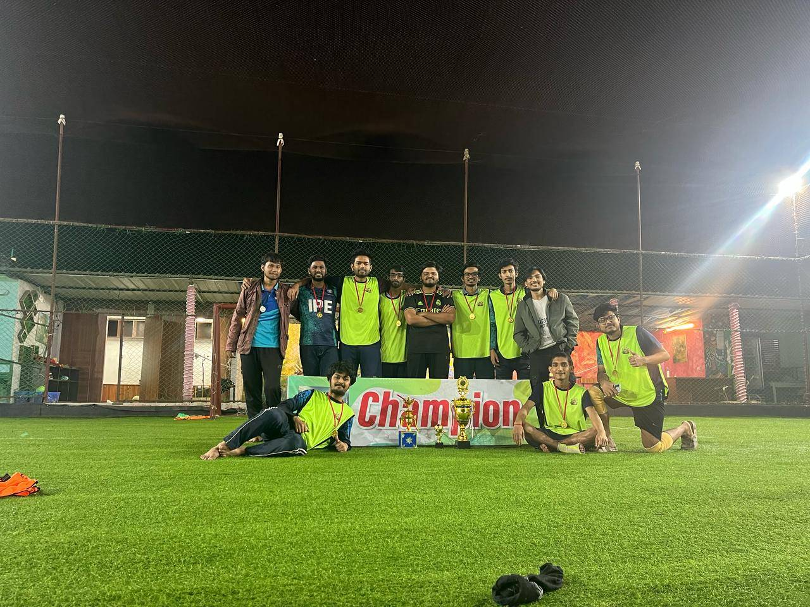
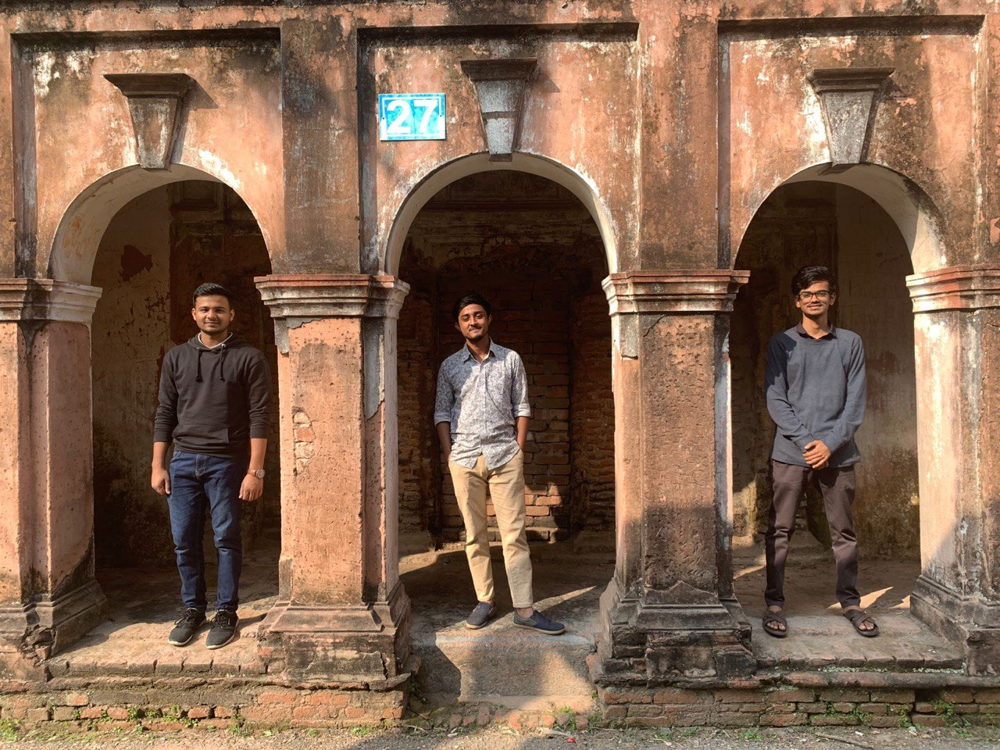
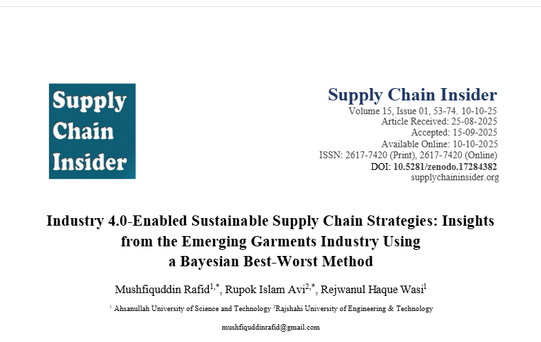
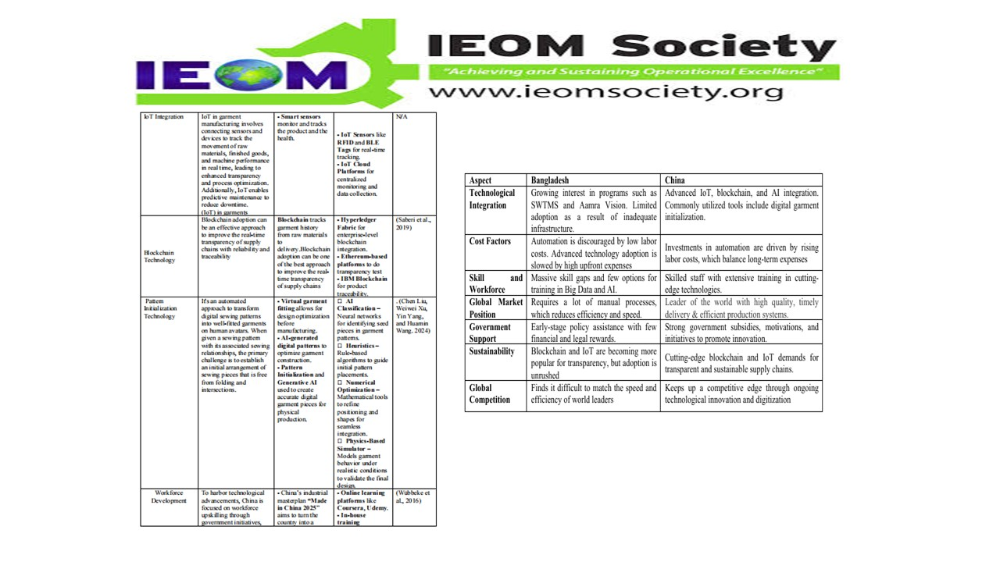
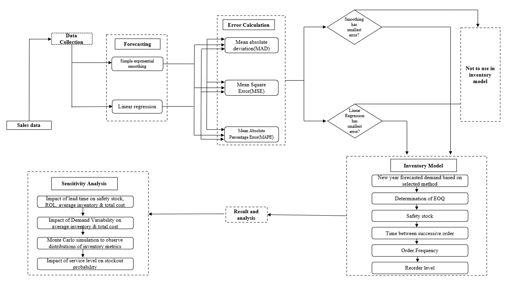

Rupok Islam Avi
RUET, Rajshahi, Bangladesh
Dhaka-1216, Bangladesh Contact rupokislamavi.ruet[at]gmail.com
Rupok Islam Avi
IPE Undergad, RUET | Operations Research | Mathematical Optimization | Machine Learning
This is Rupok Islam Avi; however, you can call me Avi. I am a final-year undergraduate student of Industrial & Production Engineering at the Rajshahi University of Engineering & Technology (RUET), Rajshahi, Bangladesh, maintaining a CGPA of 3.87/4.00 (upto 7th semester) — placing me in the top 5% of my class.
My research focuses on the intersection of Operations Research, Machine Learning, and Industrial Engineering, with particular interests in: mathematical optimization (LP, MIP, MILP, stochastic programming), scheduling theory, supply chain resilience, healthcare inventory management, and natural language processing. My research publications have collectively received 10 citations according to Google Scholar till 15 july, reflecting the growing impact of my work in these areas. I actively participate in international supply chain case competitions, having won the IEOM Supply Chain & Logistics Competition 2024 (1st place), the ISCEA Prize Global Case Competition 2025, and the BIHRM Supply Chain Research Challenge 5.0.
My undergraduate thesis, supervised by Khairun Nahar, models the university course scheduling problem as a Flexible Job Shop Problem (FJSP) — a well-known NP-hard combinatorial optimization problem — and solves it using NSGA-II (metaheuristic) and Gurobi MIP (exact solver) for multi-objective Pareto-optimal scheduling.
Currently, I am serving as an AI Research Intern at Code Studio , a mobile application and web development company, where I contribute to applied AI research and the development of intelligent software solutions. Additionally, I serve as the Secretary of Corporate Alliance at the RUET IPE Club and have completed industrial training at JTI Bangladeshstrong>, focusing on energy efficiency, boiler systems, and industrial process optimization.






News
| May 2026 | Completed full revision of NLP/FUCOM manuscript and resubmitted to Discover Artificial Intelligence (Springer Nature). |
| May 2025 | Team RUET-0105-25 officially won the 2025 ISCEA Prize Global Supply Chain Case Competition, unlocking a 70% scholarship for the CSCA certification. [ISCEA Website] |
| Oct 2025 | Team SynerChain placed 21st–27th at BIHRM Supply Chain Research Challenge 5.0, winning an 80% scholarship for the ACSCP™ certification. Research article published in Supply Chain Insider. [Paper] |
| Early 2026 | Successfully completed thesis pre-defense for Multi-Objective University Course Scheduling Using FJSP at RUET IPE department. |
| Dec 2024 | Presented 4 research papers at the 7th Bangladeshi IEOM Conference and 6th ICMIME Conference, Rajshahi. |
| Dec 2024 | Won 1st place at the IEOM Supply Chain & Logistics Competition 2024 among university teams across Bangladesh. |
Selected Publications


